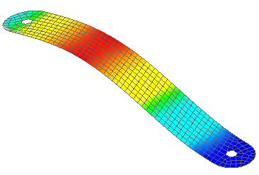

The buckling analysis uses linear theory. The following assumptions and limitations apply:
The deflections prior to buckling are small.
The reference equilibrium configuration is the initial geometry of the part.
The response of the structure prior to buckling exhibits a linear relationship between stress and strain.
Post-buckling behavior is not predicted.
